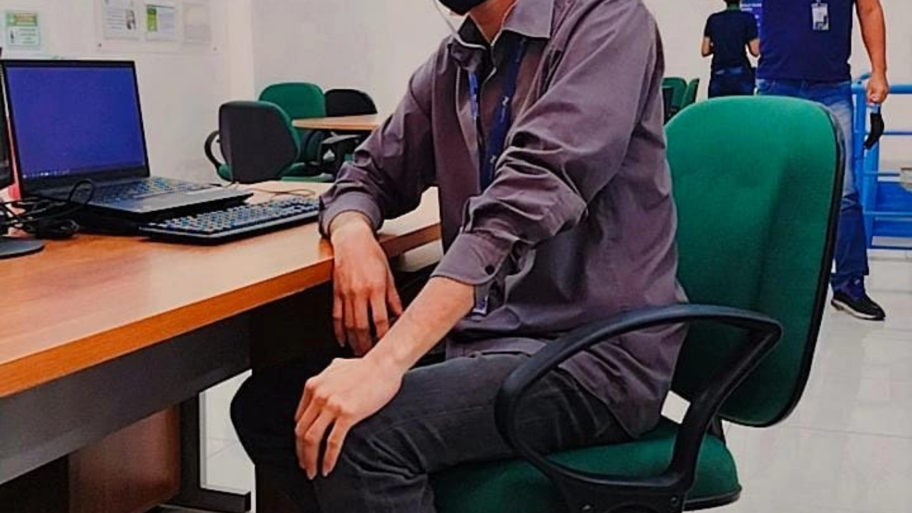
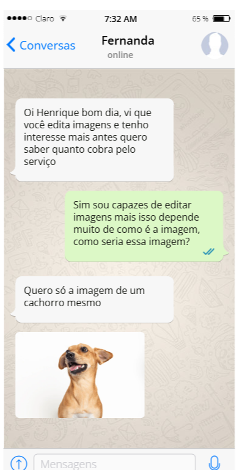

Meu nome é Henrique Paiva Pinheiro tenho 26 anos, moro em Manaus AM, gosto de editar imagens e vídeos (são meus hobbys preferidos e por isso trabalho com isso). Gosto de criar coisas do zero, minha ocupação principal é trabalhando como CLT, porém pretendo sair da mesma para me dedicar totalmente a trabalhar com o que mais amo que é o design de imagens e vídeos.
Sou apaixonado por edição visual — cada frame e cada pixel contam uma história. Trabalho com correção de cor (color grading) para criar atmosferas únicas, recorte preciso com máscaras e rotoscopia, e aplico transições suaves e efeitos visuais (VFX) que elevam a narrativa. Na edição de imagens, domino técnicas como ajuste de curvas, tratamento de pele, remoção de objetos com content-aware fill, e composição avançada em camadas.
Utilizo ferramentas como Adobe Premiere Pro, After Effects, Photoshop e DaVinci Resolve, sempre focado em entregar resultados que atendem às expectativas visuais e emocionais dos meus clientes. Se você busca alguém que entende de timing, estética e storytelling visual, estou pronto para transformar seu projeto em algo memorável.
Imagens Impactantes: Transformo imagens comuns em composições visuais impactantes. Trabalho com manipulação digital, tratamento de cores, remoção de imperfeições, e composição em camadas para criar peças únicas e profissionais. Seja para redes sociais, campanhas publicitárias ou branding pessoal, aplico técnicas como dodge & burn, ajuste de curvas, fusão de texturas e recorte com precisão vetorial para garantir que cada imagem conte uma história e transmita valor.
Criativos que Convertem: Se você vende produtos físicos online, sabe que o visual é o primeiro argumento de venda. Eu crio criativos estratégicos e persuasivos que convertem. Utilizo técnicas de design orientado à performance, edição com foco em gatilhos visuais, e animações leves para destacar os diferenciais do produto. Trabalho com mockups realistas, edição de fundo com ambientação comercial, e tipografia de impacto para gerar atenção e desejo.
Vídeos e Thumbnails de Destaque: Seu conteúdo merece destaque — e eu entrego isso com edição profissional de vídeos e thumbnails que capturam atenção em segundos. Produzo vídeos curtos em formato vertical para Reels, TikTok e Shorts, com cortes dinâmicos, legendas animadas, efeitos de transição, e trilhas sonoras sincronizadas. Para thumbnails, aplico técnicas de contraste visual, expressividade facial, tipografia de impacto, e composição que gera cliques.
Especialista em edição de imagens e vídeos para negócios online. Mais do que um trabalho, essa é minha paixão — e isso faz toda a diferença! Cada projeto que entrego carrega dedicação, criatividade e atenção aos detalhes. Por eu amar o que faço, meus clientes sentem essa energia no resultado final. E o retorno é incrível: satisfação total, elogios constantes e parcerias duradouras.
Se você quer destacar sua marca com conteúdo visual de qualidade, estou aqui para transformar sua visão em realidade. Porque quando a gente faz o que ama, o sucesso é consequência.
